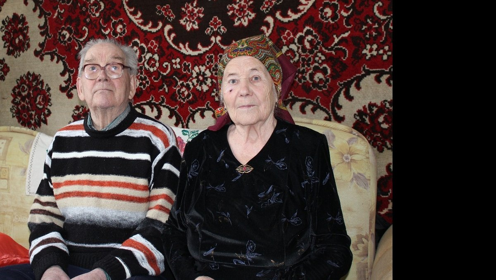
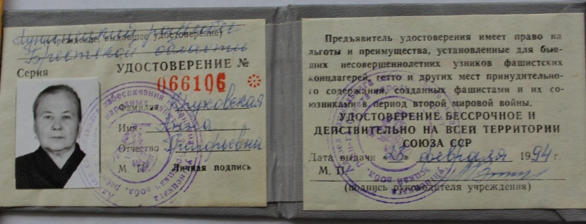

Круковская (Кулакевич) Анна Григорьевна
🏡 1. Семья и довоенное детство
В три года потеряла мать, воспитывалась у бабушки в деревне Юркевичи, затем жила у тети Наташи в селе Ленино.
⚡ 2. Начало войны и оккупация родного края
17 февраля 1943 г. каратели устроили расправу над деревней Ленино. Тетю Наташу вместе с односельчанами сожгли заживо в кузнице и расстреляли. 13-летней Ане фашист крикнул «Halt!» и приказал гнать стадо коров в Микашевичи.
⛓️ 3. Облава, арест и отправка в эшелонах
Ночевала в ящике из-под спичек в хозмаге. Товарняком отправлена через Барановичи и Белосток в Германию. В Виттенберге покупатели ходили по кругу, тыкая в детей тростью. 13-летнюю худенькую девочку последним забрал бауэр Вильям Вегнер в деревню Загост бай Пудлец.
🌾 4. Рабский труд, испытания и лагеря Германии
Подъем в 4 утра: дойка 6 коров, варка котла картофеля, уход за свиньями, лошадьми, птицей. Два года вручную очищала гигантское поле от тяжелых неподъемных камней. Носила нашивку «OST», терпела насмешки и угрозы отправки в концлагерь.
🕊️ 5. Освобождение союзными и советскими войсками
3 мая 1945 г. в село вошли первые советские солдаты. Но путь домой лежал через военные прачечные в Пудлеце и Яворе: девочки наждачной бумагой вручную отстирывали окровавленное простреленное обмундирование бойцов. В августе 1946 г. в телячьем вагоне на цепях с коровами прибыла в Гродно, а 16 августа — в Микашевичи.
🌱 6. Возвращение на пепелище и мирный труд
С 1948 г. боролась с малярией в санстанции. В 1953 г. вышла замуж за железнодорожника Круковского Николая Трофимовича. Прожили душа в душу более 60 лет, воспитали сыновей Анатолия и Михаила, дождались правнуков.
📷 Фотографии и архивные документы (2)
Фото 15. Круковская А.Г. с мужем, 2013 год

Фото 16. Удостоверение несовершеннолетнего узника № 066106, Круковской А.Г.